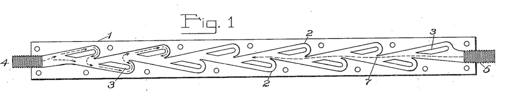

26.5. Tesla Valve#
Example provided by Philip Lederer.
The original drawing by N. Tesla in his patent (US patent 1329559 “Valvular Conduit”):


Geometry: tesla.py
from ngsolve import *
from netgen.occ import *
from ngsolve.webgui import Draw
import ipywidgets as widgets
valve = GetValve(N = 3, dim = 2, R = 0.5, alpha = 25, Winlet = 1, beta = 180, L1 = 6.4, L2 = 7, Linlet = 5, closevalve = True)
mesh = Mesh(OCCGeometry(valve, dim=2).GenerateMesh(maxh = 0.5)).Curve(3)
Draw(mesh);
Apply volume force to the left or to the right, compute mass flow.
nu = 0.005 # viscosity
tau = 0.002 # time step
tend = 50 # end time
order = 2 # fem order (velocity)
Use H(div)-conforming Hybrid DG method (Lehrenfeld-Schöberl, 2016):
velocity: \(BDM^k\)
pressure: \(P^{k-1}\)
VT = HDiv(mesh,order=order, dirichlet="wall", hodivfree=True)
Vhat = TangentialFacetFESpace(mesh,order=order, dirichlet="wall")
Q = L2(mesh,order=0)
X = VT * Vhat * Q
print ("ndof:", X.ndof)
(u, uhat, p), (v, vhat, q) = X.TnT()
n = specialcf.normal(mesh.dim)
h = specialcf.mesh_size
def tang(u): # tangential part of a vector field
return u - (u*n)*n
ndof: 18906
implicit/explicit time-stepping:
and
Stokes-operator, modified mass-matrix, and right hand side:
dS = dx(element_boundary = True)
stokes = (nu*InnerProduct(Grad(u), Grad(v)) - div(u)*q - div(v)*p - 1e-10/nu*p*q)*dx
stokes += nu * Grad(u)*n * tang(v-vhat) * dS
stokes += nu * Grad(v)*n * tang(u-uhat) * dS
stokes += nu * 10 * order**2/h * tang(v-vhat)*tang(u-uhat) * dS
K = BilinearForm(stokes, symmetric=True).Assemble()
mstar = BilinearForm(u*v*dx + tau*stokes, symmetric=True).Assemble()
inv = mstar.mat.Inverse(X.FreeDofs(), inverse = "sparsecholesky")
f = LinearForm(CF((1,0)) * v * dx(definedon = mesh.Materials("valve"))).Assemble()
Convective term: brand-new matrix-free operator application
conv = BilinearForm(X, nonlinear_matrix_free_bdb=True)
conv += -InnerProduct(grad(v)*u, u) * dx(bonus_intorder=order)
un = u.Operator("normalcomponent")
uhat_t = uhat.Operator("tangentialcomponent")
vn = v.Operator("normalcomponent")
conv += IfPos(un, un * u * v, 2 * un * un * vn + un * ((2*uhat_t-u) * v) ) * dx(element_boundary = True, bonus_intorder=order)
conv.Assemble()
conv_operator = conv.mat
---------------------------------------------------------------------------
NgException Traceback (most recent call last)
Cell In[7], line 8
4 un = u.Operator("normalcomponent")
5 uhat_t = uhat.Operator("tangentialcomponent")
6 vn = v.Operator("normalcomponent")
7 conv += IfPos(un, un * u * v, 2 * un * un * vn + un * ((2*uhat_t-u) * v) ) * dx(element_boundary = True, bonus_intorder=order)
----> 8 conv.Assemble()
9 conv_operator = conv.mat
NgException: DIFFOP::DimRef should not be here, diffop = N6ngcomp30DiffOpTangentialComponentHCurlILi2EEE
Averaging of tangential components to facet space:
u1, v1 = VT.TnT()
uh1, vh1 = Vhat.TnT()
massfacet = BilinearForm(tang(uh1)*tang(vh1)*dx(element_boundary=True)).Assemble()
mixedmassfacet = BilinearForm(u1*tang(vh1)*dx(element_boundary=True)).Assemble()
invfacet = massfacet.mat.CreateBlockSmoother(Vhat.CreateSmoothingBlocks(blocktype="facet"))
eu, euhat, ep = X.embeddings
ru, ruhat, rp = X.restrictions
avg_op = eu@ru + euhat@invfacet@mixedmassfacet.mat@ru
gfu = GridFunction(X)
def Solve(factor=1, callback = lambda: None):
t = 0
cnt = 0
with TaskManager():
while t < tend:
res = factor*f.vec - conv_operator@avg_op * gfu.vec - K.mat * gfu.vec
gfu.vec.data += tau * inv * res
t += tau
cnt += 1
callback (cnt, gfu)
massflux = []
massflux_reverse = []
time = []
gfut = GridFunction(gfu.components[0].space, multidim=0)
gfut_reverse = GridFunction(gfu.components[0].space, multidim=0)
scene = Draw(gfu.components[0], mesh, min=0, max=4, autoscale=False, vectors = {"grid_size": 100})
tw = widgets.Text(value='t = 0')
display(tw)
def cbforward (cnt, gfu):
if cnt % 100 == 0:
scene.Redraw()
tw.value = "t = "+str(cnt*tau)
if cnt % 500 == 0:
gfut.AddMultiDimComponent(gfu.components[0].vec)
massflux.append(abs(Integrate(gfu.components[0]*n, mesh.Boundaries("inlet"))))
time.append(cnt*tau)
def cbreverse (cnt, gfu):
if cnt % 100 == 0:
scene.Redraw()
tw.value = "t = "+str(cnt*tau)
if cnt % 500 == 0:
gfut_reverse.AddMultiDimComponent(gfu.components[0].vec)
massflux_reverse.append(abs(Integrate(gfu.components[0]*n, mesh.Boundaries("inlet"))))
gfu.vec[:] = 0
Solve (1, cbforward)
gfu.vec[:] = 0
Solve (-1, cbreverse)
In the following plots we can see the solutions at \(t = T_{end}\). We observe that for the flow from left to right the solution is much more turbulent and the valve is “activated” since the fluid stops it self. On the other hand, for the flow from right to left, the solution is nearly laminar and much faster. This can also be observed in the the maxs flux ploted over time below.
Draw (gfut, mesh, interpolate_multidim=True, animate=True,
min=0, max=4, autoscale=False, vectors = {"grid_size": 100});
Draw (gfut_reverse, mesh, interpolate_multidim=True, animate=True,
min=0, max=6, autoscale=False, vectors = {"grid_size": 100});
import matplotlib.pyplot as plt
plt.plot(time, massflux, "-", color = "orange", label = "left_to_right")
plt.plot(time, massflux_reverse, "-", color = "blue", label = "right_to_left")
plt.legend(loc = "lower right")
plt.show()